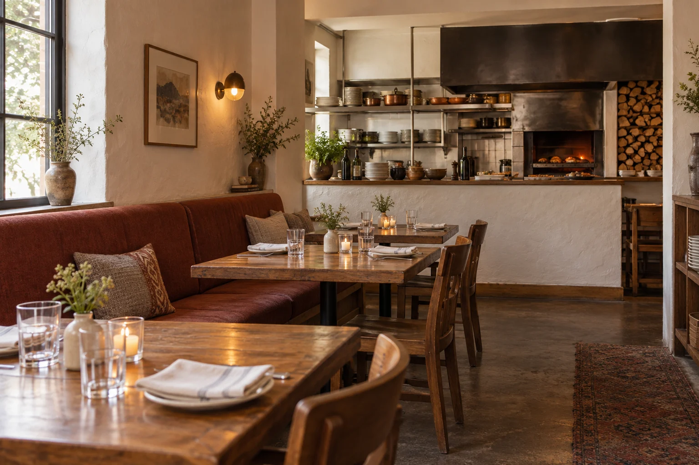

Portland, Oregon
Make an
evening of it.
Twenty-eight seats, dinner five days a week, and a slower Sunday lunch.

Fictional Portland neighbourhood setting. This image is not a real location or a measured room plan.
When the kitchen is on.
- Dinner · Wed / Thu / Sun
- 5:30–9:30 pm
- Dinner · Fri / Sat
- 5:30–10 pm
- Sunday lunch
- Noon–2:30 pm
- Monday & Tuesday
- Kitchen closed
All times are local to Portland, Oregon.
The same six dishes, vegetarian set and three alcohol-free drinks are offered at dinner and Sunday lunch. Example sittings allow 90 minutes.
Explore a tableBefore your visit
A few useful things.
How large a party can I explore?
The table demonstration covers one to six guests. The imagined room has four tables for two, two for four and two for six: 28 seats in total. It does not join tables, hold stock or take bookings. Groups of seven or more receive an out-of-scope explanation.
Can I check ingredients?
Every dish on the menu lists ingredients to note. These are illustrative recipes, not complete safety or cross-contact assurances. There is no real kitchen here to confirm an accommodation; do not use this concept to make dietary decisions.
Is this a real restaurant I can travel to?
No. Ember Table is a fictional restaurant created to demonstrate a complete website. There is no real street address, map pin, phone number, table or collection point.
Do you offer delivery or private events?
This concept is dine-in only. Takeaway, delivery, catering, private events and gift cards are outside its scope.
A note about contact
hello@embertable.example is an example address, not a monitored inbox. The table tool saves a note to your own device; it does not send an email. No personal contact information is needed.
Try the table-request demonstration